v4_val_0040
points 3/4 | paths 1 | coverage 0.556 | base distance 0.030
先看左侧无标注原图确认真实苗体，再检查中间的学习点结构和右侧的最终路径是否贴合真实茎叶。
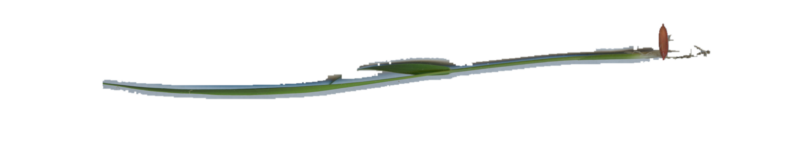
用于判断算法曲线是否确实覆盖真实苗体；点击图片可查看原尺寸。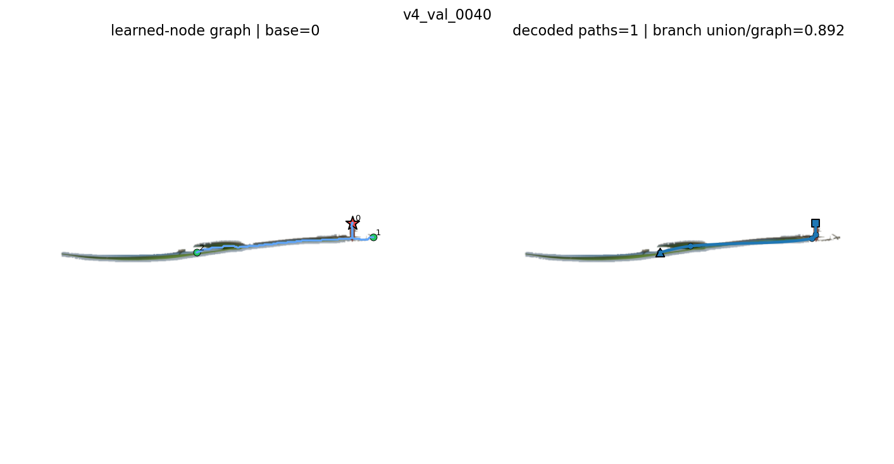
结果图左半为学习点结构图，右半为解码路径；点击图片可查看原尺寸。v4_val_0019
points 5/6 | paths 2 | coverage 0.825 | base distance 0.000
先看左侧无标注原图确认真实苗体，再检查中间的学习点结构和右侧的最终路径是否贴合真实茎叶。
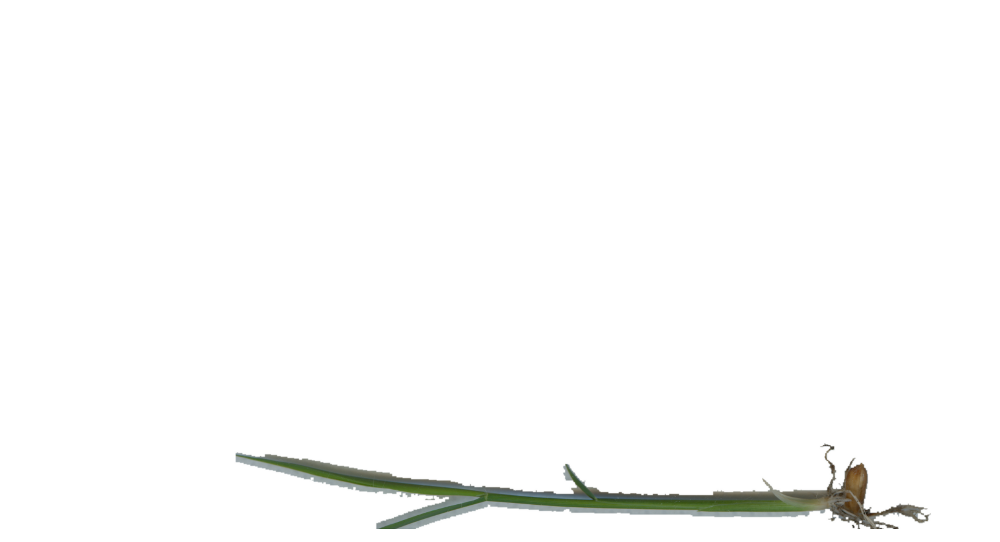
用于判断算法曲线是否确实覆盖真实苗体；点击图片可查看原尺寸。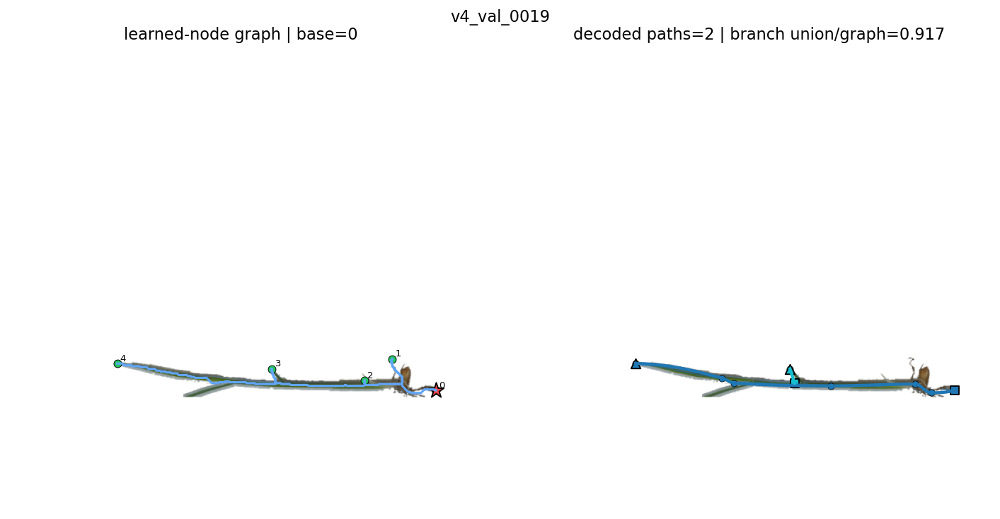
结果图左半为学习点结构图，右半为解码路径；点击图片可查看原尺寸。v4_val_0013
points 6/9 | paths 2 | coverage 0.832 | base distance 0.000
先看左侧无标注原图确认真实苗体，再检查中间的学习点结构和右侧的最终路径是否贴合真实茎叶。
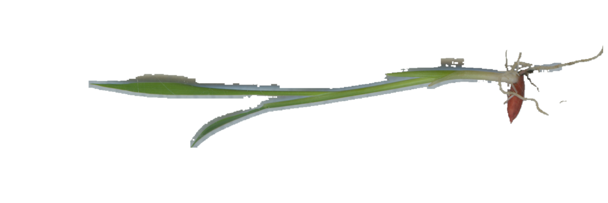
用于判断算法曲线是否确实覆盖真实苗体；点击图片可查看原尺寸。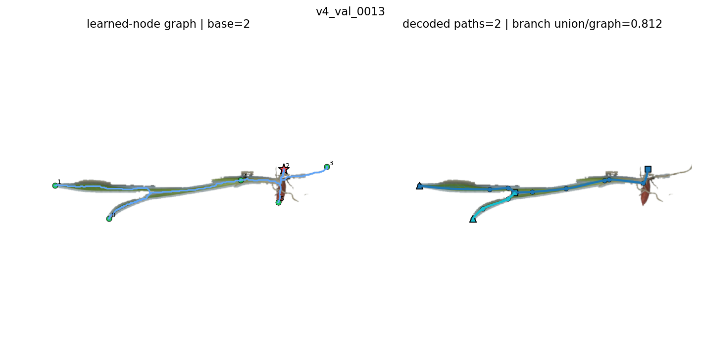
结果图左半为学习点结构图，右半为解码路径；点击图片可查看原尺寸。v4_val_0031
points 7/8 | paths 2 | coverage 0.858 | base distance 0.000
先看左侧无标注原图确认真实苗体，再检查中间的学习点结构和右侧的最终路径是否贴合真实茎叶。
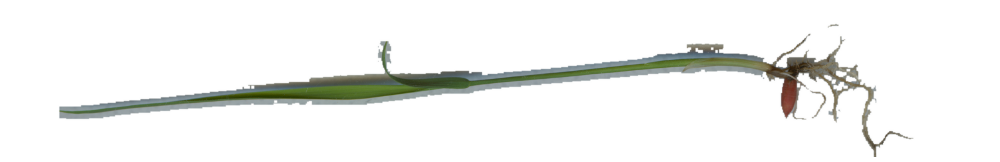
用于判断算法曲线是否确实覆盖真实苗体；点击图片可查看原尺寸。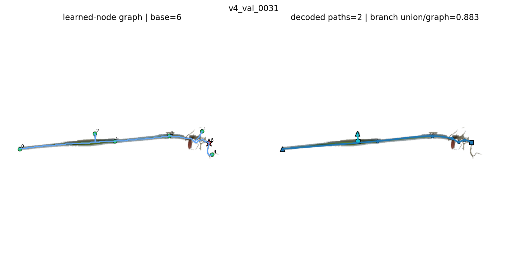
结果图左半为学习点结构图，右半为解码路径；点击图片可查看原尺寸。v4_val_0036
points 8/9 | paths 3 | coverage 0.865 | base distance 0.000
先看左侧无标注原图确认真实苗体，再检查中间的学习点结构和右侧的最终路径是否贴合真实茎叶。
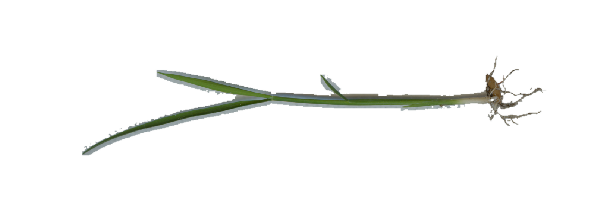
用于判断算法曲线是否确实覆盖真实苗体；点击图片可查看原尺寸。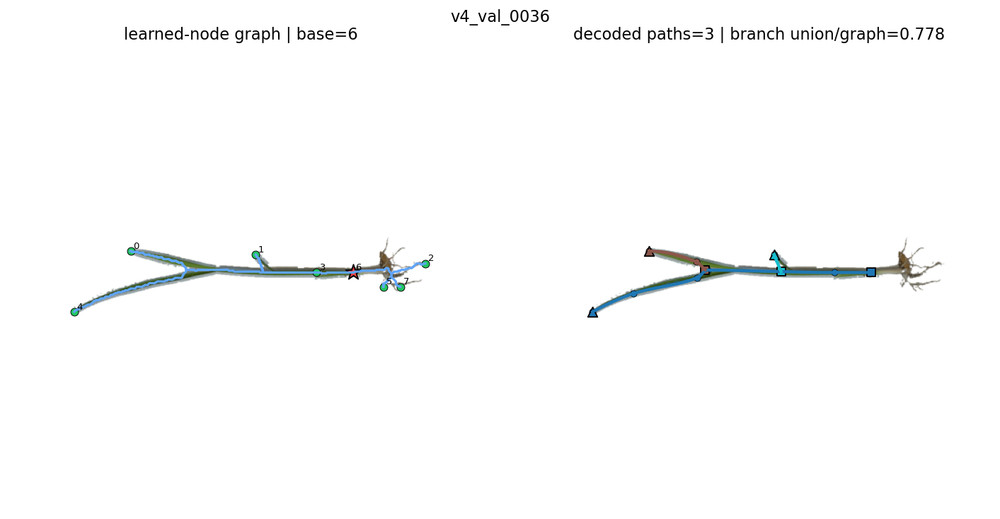
结果图左半为学习点结构图，右半为解码路径；点击图片可查看原尺寸。v4_val_0011
points 4/6 | paths 2 | coverage 0.866 | base distance 0.032
先看左侧无标注原图确认真实苗体，再检查中间的学习点结构和右侧的最终路径是否贴合真实茎叶。
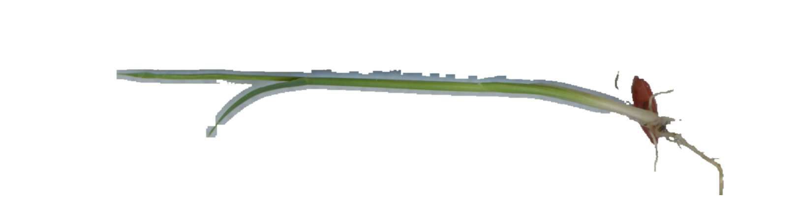
用于判断算法曲线是否确实覆盖真实苗体；点击图片可查看原尺寸。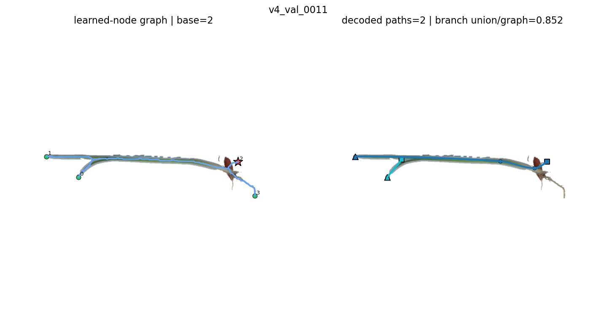
结果图左半为学习点结构图，右半为解码路径；点击图片可查看原尺寸。v4_val_0029
points 4/6 | paths 1 | coverage 0.887 | base distance 0.000
先看左侧无标注原图确认真实苗体，再检查中间的学习点结构和右侧的最终路径是否贴合真实茎叶。
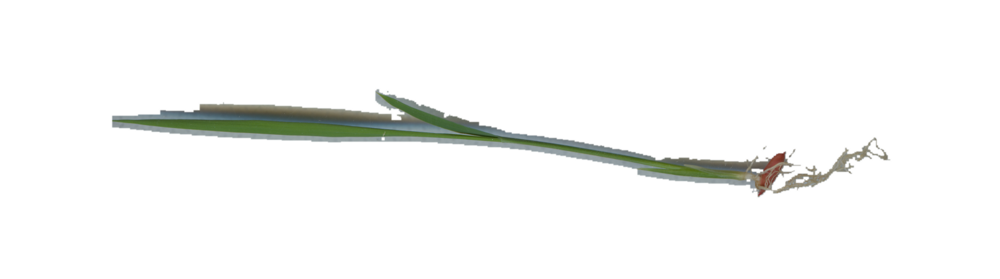
用于判断算法曲线是否确实覆盖真实苗体；点击图片可查看原尺寸。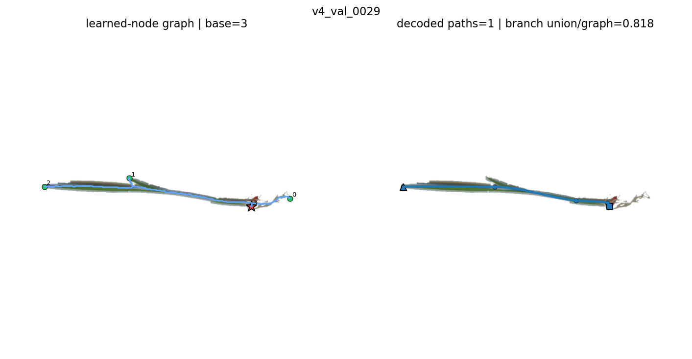
结果图左半为学习点结构图，右半为解码路径；点击图片可查看原尺寸。v4_val_0039
points 4/5 | paths 1 | coverage 0.891 | base distance 0.000
先看左侧无标注原图确认真实苗体，再检查中间的学习点结构和右侧的最终路径是否贴合真实茎叶。
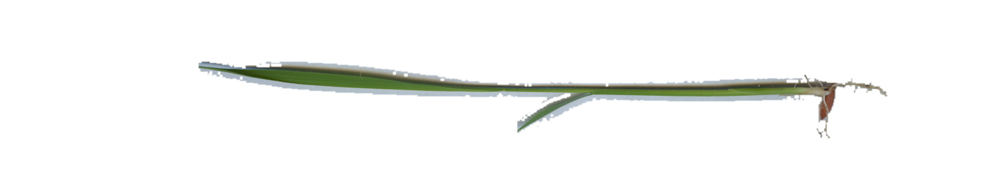
用于判断算法曲线是否确实覆盖真实苗体；点击图片可查看原尺寸。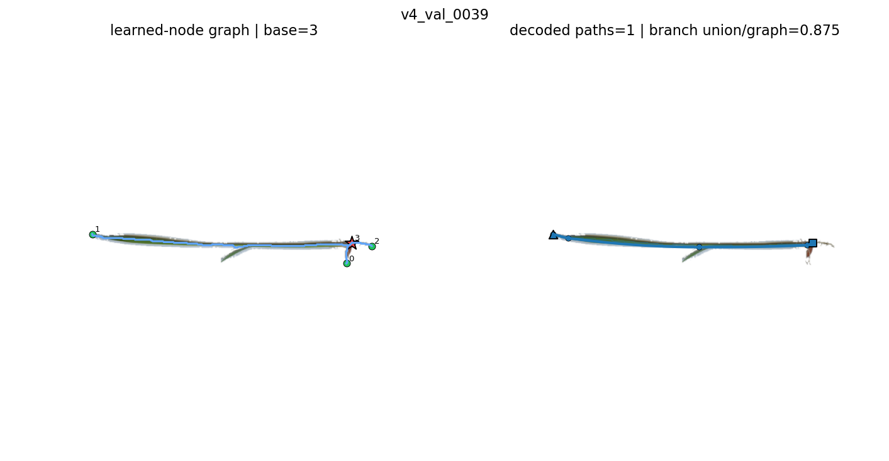
结果图左半为学习点结构图，右半为解码路径；点击图片可查看原尺寸。v4_val_0010
points 10/11 | paths 2 | coverage 0.904 | base distance 0.032
先看左侧无标注原图确认真实苗体，再检查中间的学习点结构和右侧的最终路径是否贴合真实茎叶。
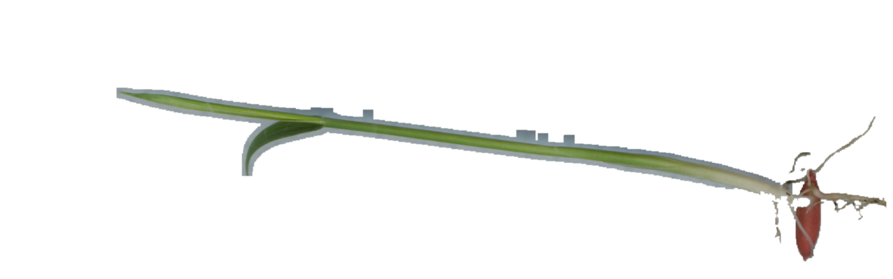
用于判断算法曲线是否确实覆盖真实苗体；点击图片可查看原尺寸。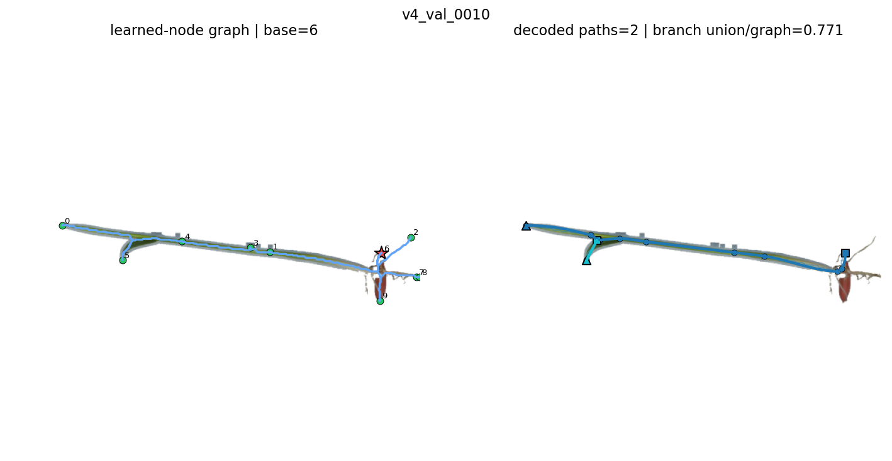
结果图左半为学习点结构图，右半为解码路径；点击图片可查看原尺寸。v4_val_0030
points 6/7 | paths 1 | coverage 0.914 | base distance 0.009
先看左侧无标注原图确认真实苗体，再检查中间的学习点结构和右侧的最终路径是否贴合真实茎叶。
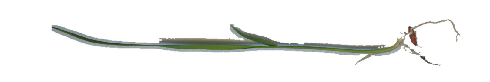
用于判断算法曲线是否确实覆盖真实苗体；点击图片可查看原尺寸。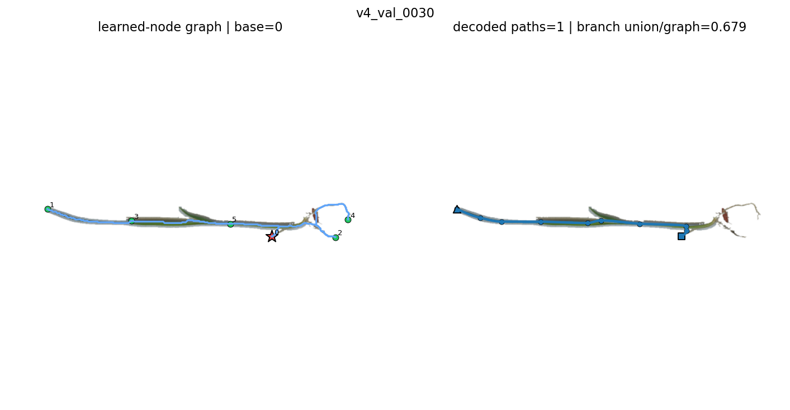
结果图左半为学习点结构图，右半为解码路径；点击图片可查看原尺寸。v4_val_0026
points 6/6 | paths 1 | coverage 0.952 | base distance 0.000
先看左侧无标注原图确认真实苗体，再检查中间的学习点结构和右侧的最终路径是否贴合真实茎叶。
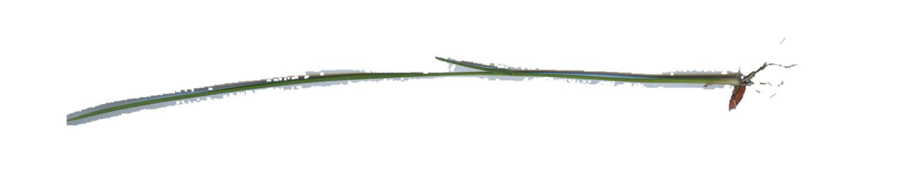
用于判断算法曲线是否确实覆盖真实苗体；点击图片可查看原尺寸。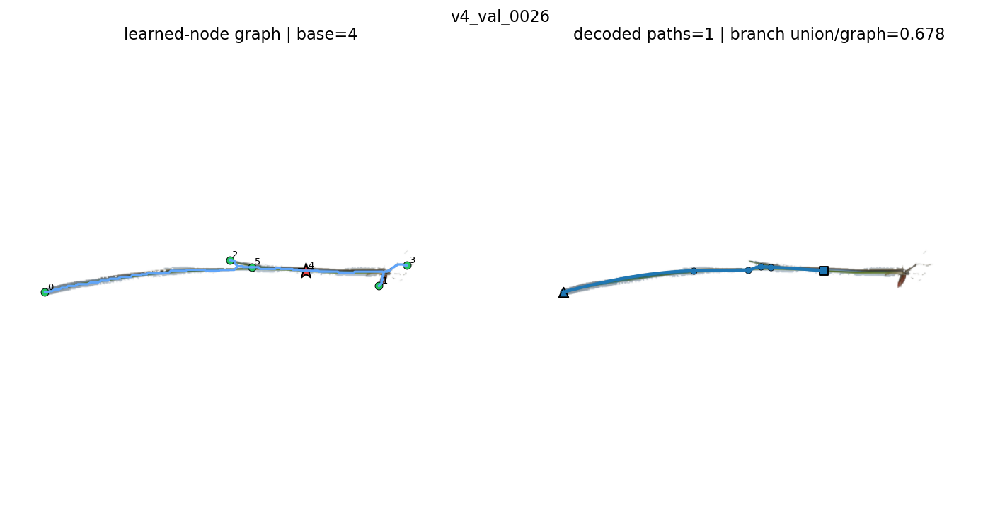
结果图左半为学习点结构图，右半为解码路径；点击图片可查看原尺寸。v4_val_0012
points 3/3 | paths 1 | coverage 0.960 | base distance 0.031
先看左侧无标注原图确认真实苗体，再检查中间的学习点结构和右侧的最终路径是否贴合真实茎叶。
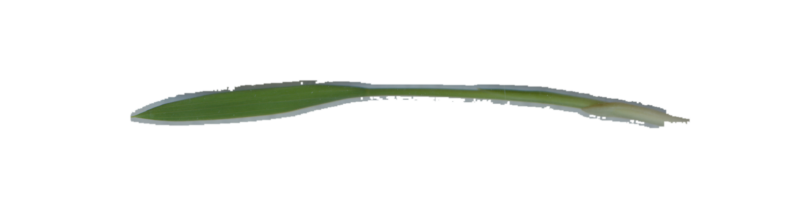
用于判断算法曲线是否确实覆盖真实苗体；点击图片可查看原尺寸。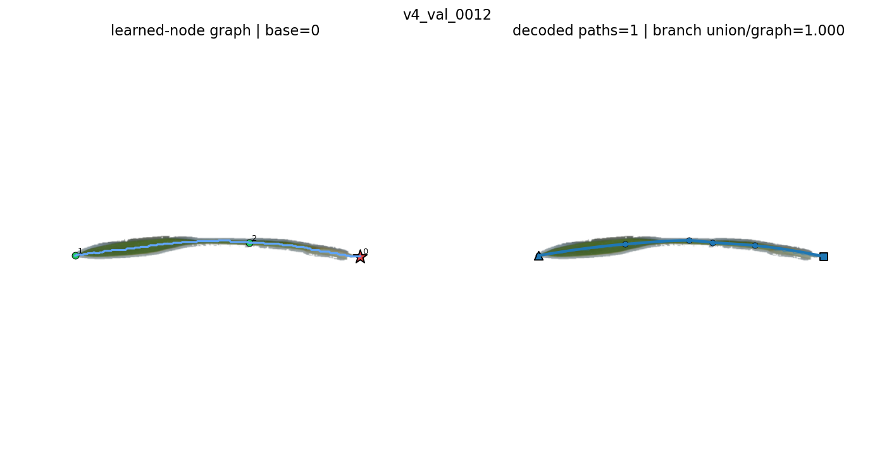
结果图左半为学习点结构图，右半为解码路径；点击图片可查看原尺寸。v4_val_0033
points 7/9 | paths 2 | coverage 0.966 | base distance 0.000
先看左侧无标注原图确认真实苗体，再检查中间的学习点结构和右侧的最终路径是否贴合真实茎叶。
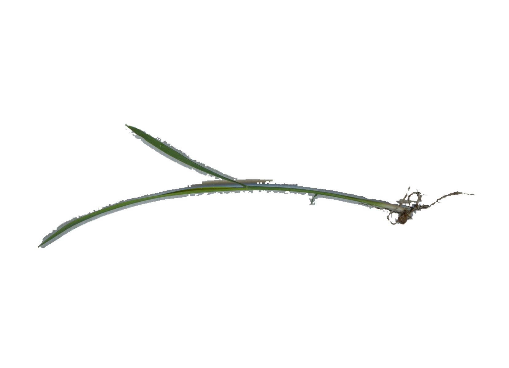
用于判断算法曲线是否确实覆盖真实苗体；点击图片可查看原尺寸。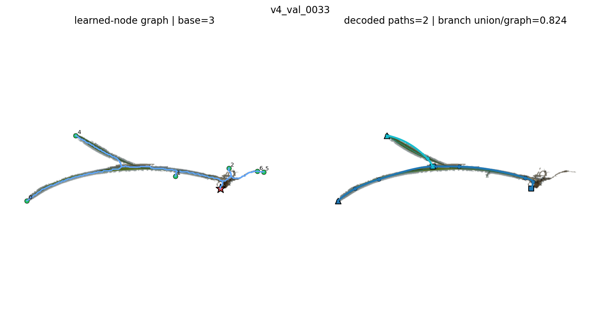
结果图左半为学习点结构图，右半为解码路径；点击图片可查看原尺寸。v4_val_0009
points 4/5 | paths 1 | coverage 0.970 | base distance 0.055
先看左侧无标注原图确认真实苗体，再检查中间的学习点结构和右侧的最终路径是否贴合真实茎叶。
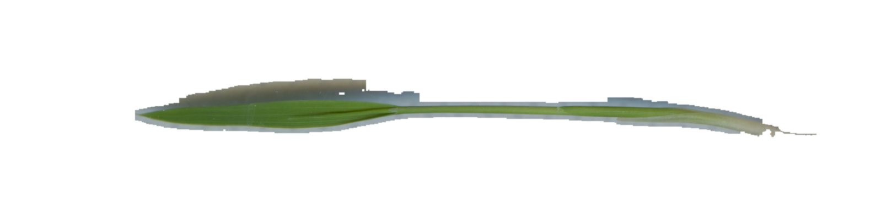
用于判断算法曲线是否确实覆盖真实苗体；点击图片可查看原尺寸。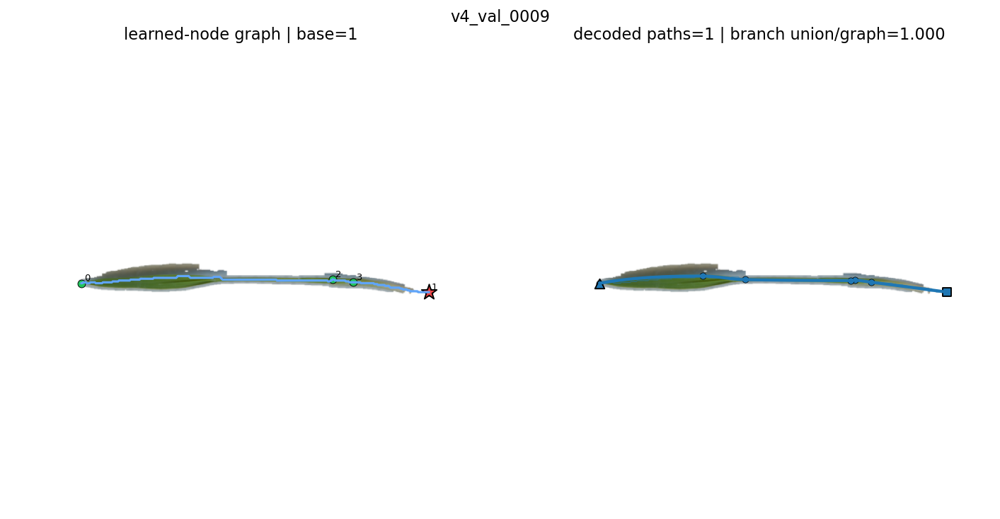
结果图左半为学习点结构图，右半为解码路径；点击图片可查看原尺寸。v4_val_0016
points 6/7 | paths 2 | coverage 0.973 | base distance 0.000
先看左侧无标注原图确认真实苗体，再检查中间的学习点结构和右侧的最终路径是否贴合真实茎叶。
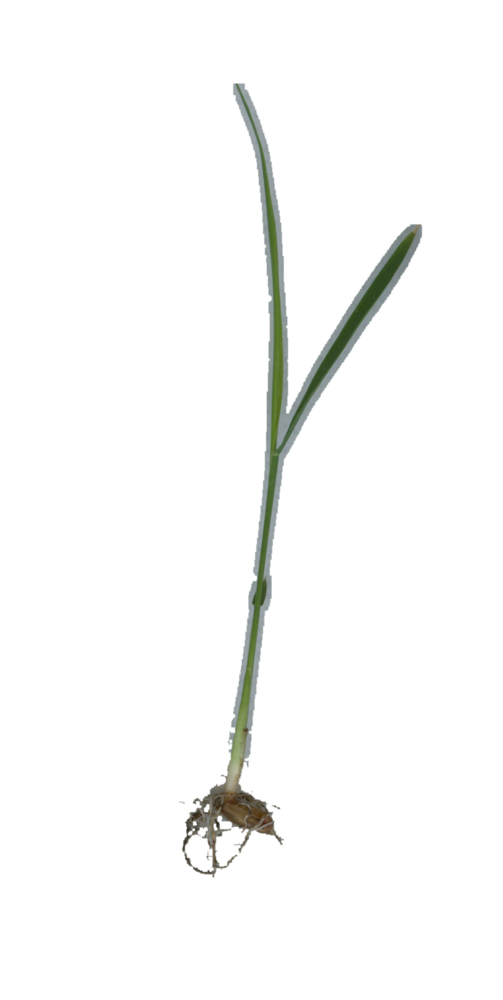
用于判断算法曲线是否确实覆盖真实苗体；点击图片可查看原尺寸。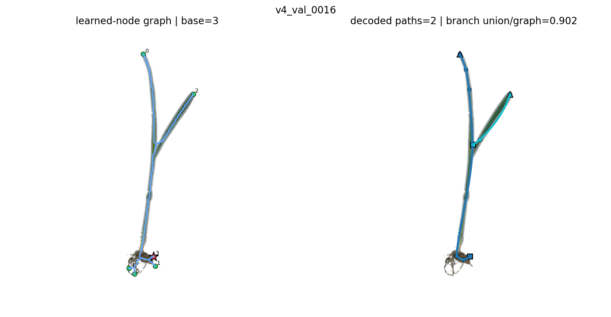
结果图左半为学习点结构图，右半为解码路径；点击图片可查看原尺寸。v4_val_0025
points 7/7 | paths 1 | coverage 0.989 | base distance 0.000
先看左侧无标注原图确认真实苗体，再检查中间的学习点结构和右侧的最终路径是否贴合真实茎叶。
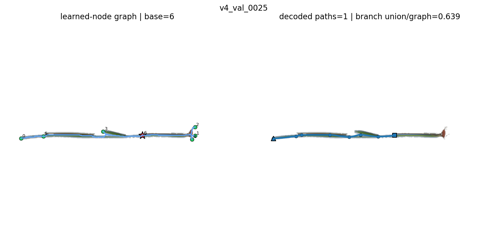
结果图左半为学习点结构图，右半为解码路径；点击图片可查看原尺寸。v4_val_0006
points 4/6 | paths 1 | coverage 0.900 | base distance 0.014
先看左侧无标注原图确认真实苗体，再检查中间的学习点结构和右侧的最终路径是否贴合真实茎叶。
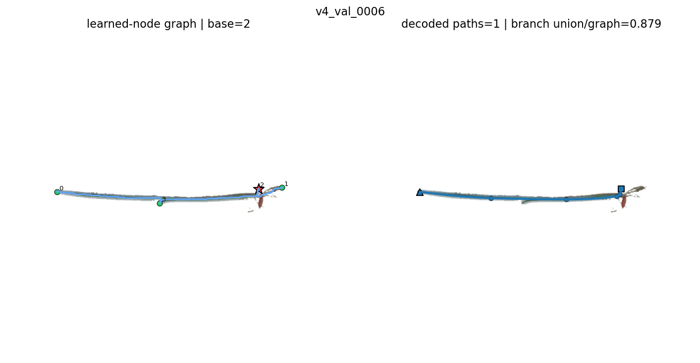
结果图左半为学习点结构图，右半为解码路径；点击图片可查看原尺寸。v4_val_0038
points 3/5 | paths 1 | coverage 0.907 | base distance 0.012
先看左侧无标注原图确认真实苗体，再检查中间的学习点结构和右侧的最终路径是否贴合真实茎叶。
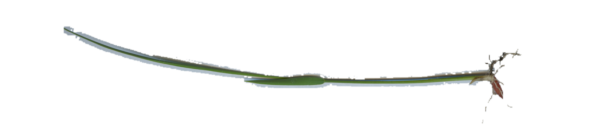
用于判断算法曲线是否确实覆盖真实苗体；点击图片可查看原尺寸。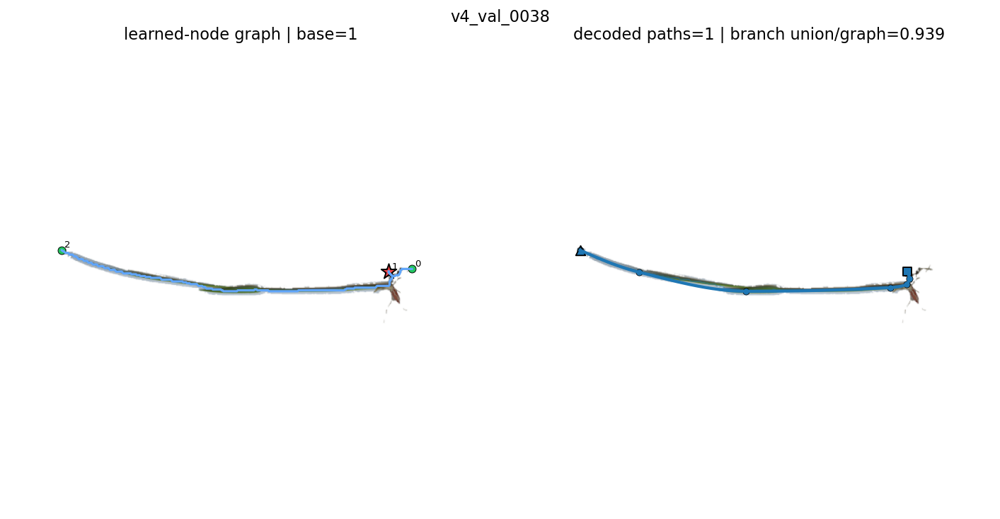
结果图左半为学习点结构图，右半为解码路径；点击图片可查看原尺寸。v4_val_0004
points 3/6 | paths 1 | coverage 0.916 | base distance 0.029
先看左侧无标注原图确认真实苗体，再检查中间的学习点结构和右侧的最终路径是否贴合真实茎叶。
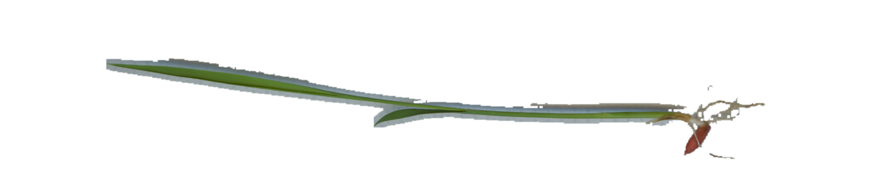
用于判断算法曲线是否确实覆盖真实苗体；点击图片可查看原尺寸。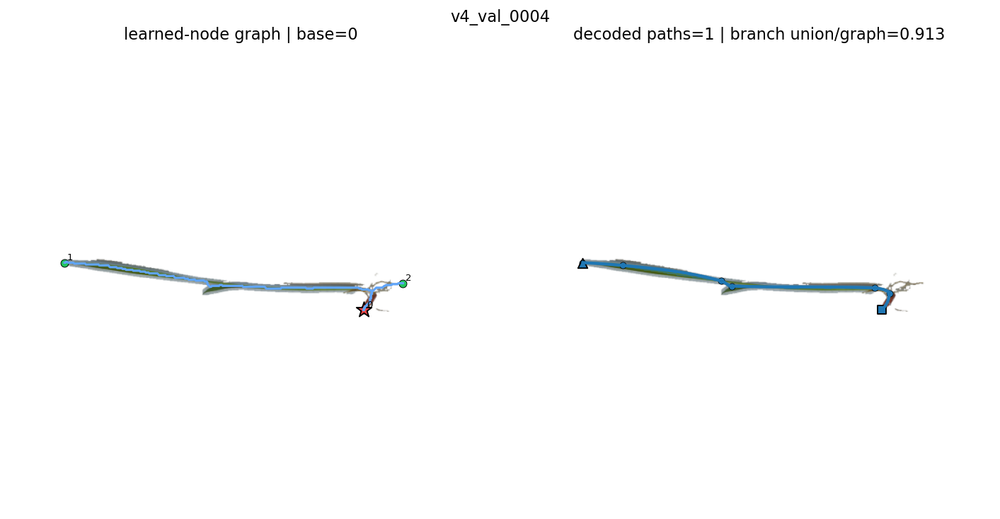
结果图左半为学习点结构图，右半为解码路径；点击图片可查看原尺寸。v4_val_0008
points 5/5 | paths 2 | coverage 0.927 | base distance 0.000
先看左侧无标注原图确认真实苗体，再检查中间的学习点结构和右侧的最终路径是否贴合真实茎叶。
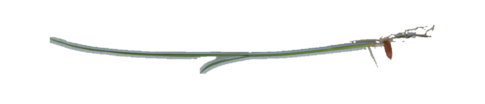
用于判断算法曲线是否确实覆盖真实苗体；点击图片可查看原尺寸。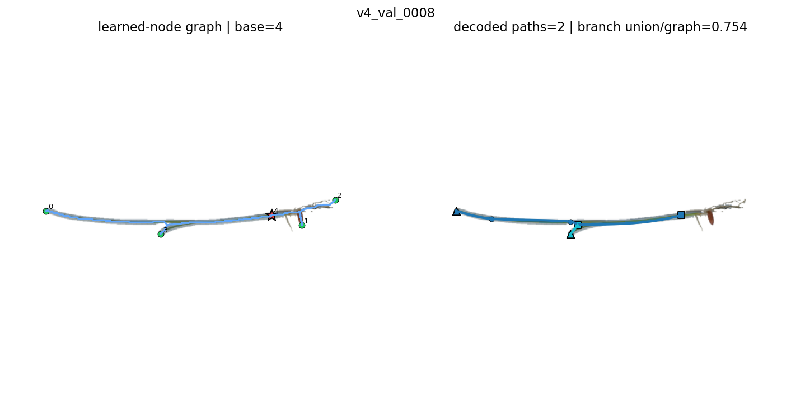
结果图左半为学习点结构图，右半为解码路径；点击图片可查看原尺寸。v4_val_0032
points 5/6 | paths 1 | coverage 0.932 | base distance 0.008
先看左侧无标注原图确认真实苗体，再检查中间的学习点结构和右侧的最终路径是否贴合真实茎叶。
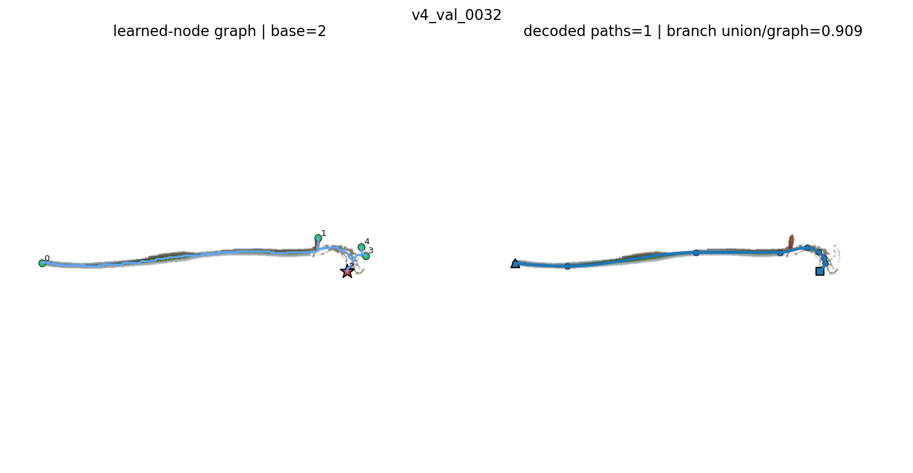
结果图左半为学习点结构图，右半为解码路径；点击图片可查看原尺寸。v4_val_0020
points 7/7 | paths 3 | coverage 0.944 | base distance 0.000
先看左侧无标注原图确认真实苗体，再检查中间的学习点结构和右侧的最终路径是否贴合真实茎叶。
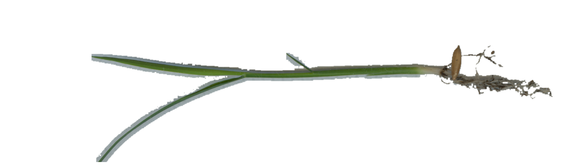
用于判断算法曲线是否确实覆盖真实苗体；点击图片可查看原尺寸。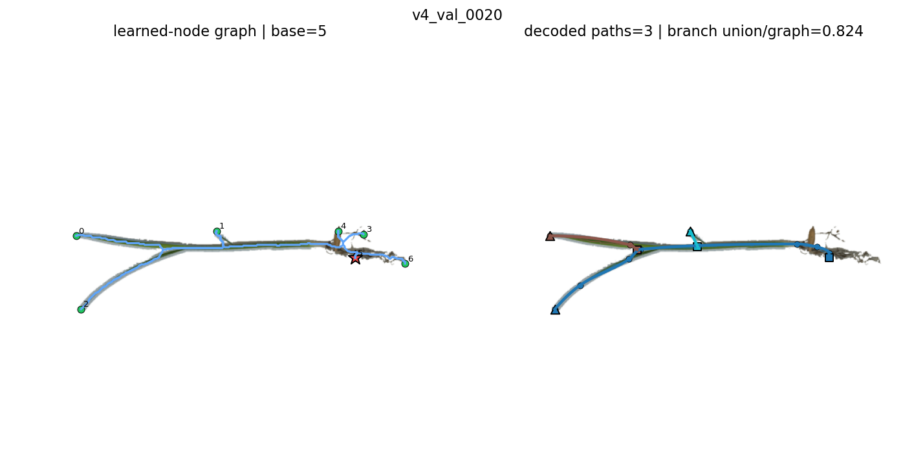
结果图左半为学习点结构图，右半为解码路径；点击图片可查看原尺寸。v4_val_0014
points 8/8 | paths 2 | coverage 0.949 | base distance 0.000
先看左侧无标注原图确认真实苗体，再检查中间的学习点结构和右侧的最终路径是否贴合真实茎叶。
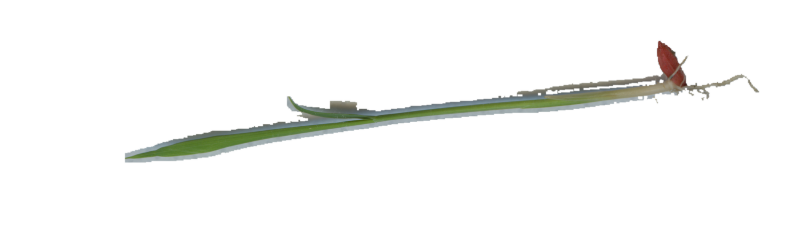
用于判断算法曲线是否确实覆盖真实苗体；点击图片可查看原尺寸。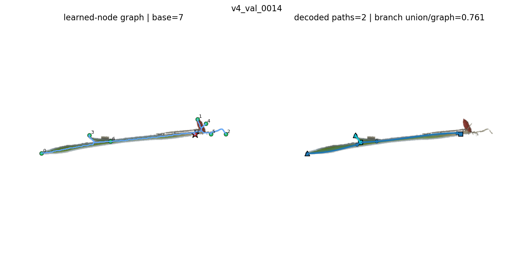
结果图左半为学习点结构图，右半为解码路径；点击图片可查看原尺寸。v4_val_0015
points 8/9 | paths 2 | coverage 0.949 | base distance 0.000
先看左侧无标注原图确认真实苗体，再检查中间的学习点结构和右侧的最终路径是否贴合真实茎叶。
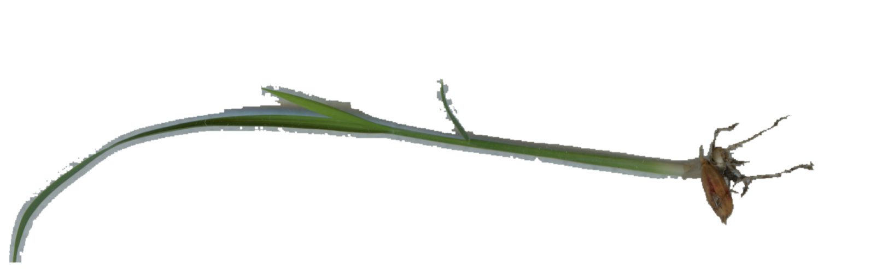
用于判断算法曲线是否确实覆盖真实苗体；点击图片可查看原尺寸。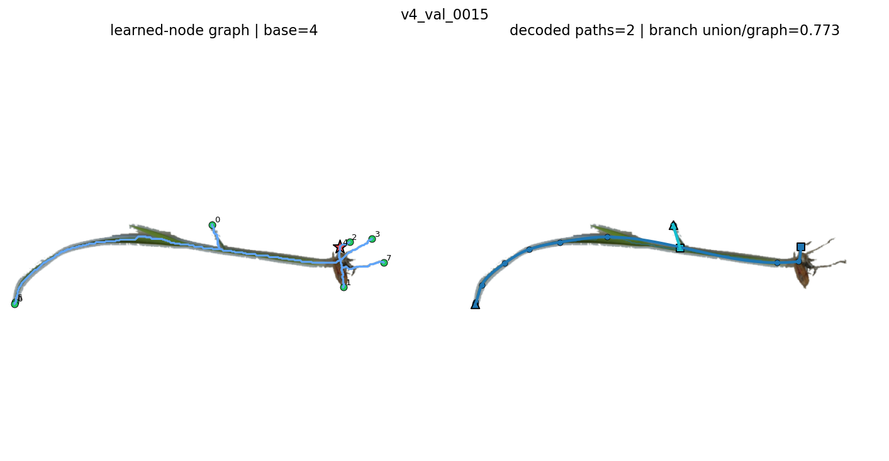
结果图左半为学习点结构图，右半为解码路径；点击图片可查看原尺寸。v4_val_0021
points 5/6 | paths 1 | coverage 0.950 | base distance 0.000
先看左侧无标注原图确认真实苗体，再检查中间的学习点结构和右侧的最终路径是否贴合真实茎叶。
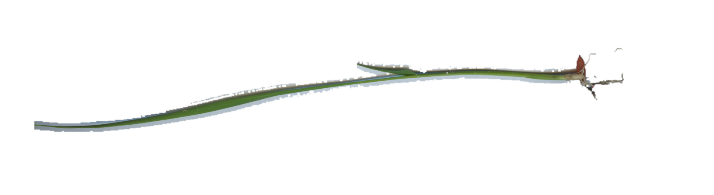
用于判断算法曲线是否确实覆盖真实苗体；点击图片可查看原尺寸。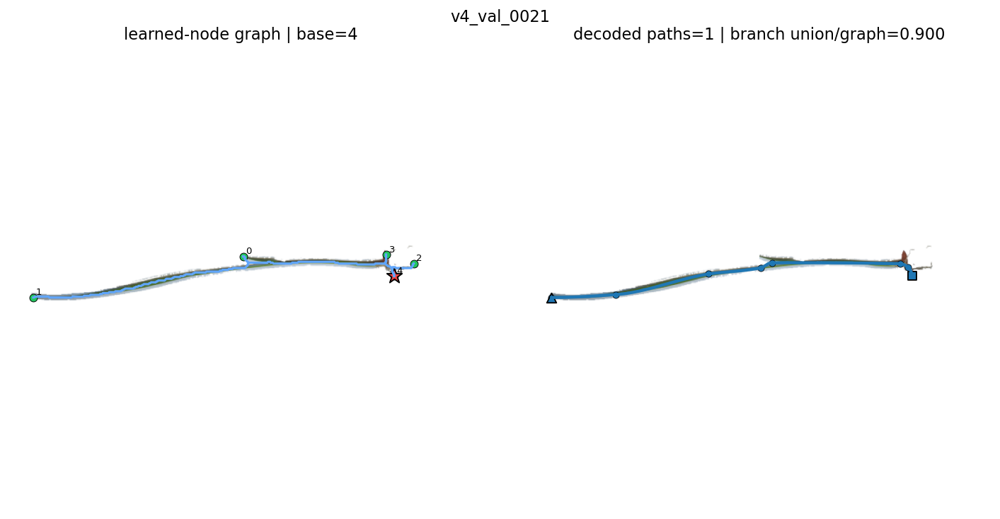
结果图左半为学习点结构图，右半为解码路径；点击图片可查看原尺寸。v4_val_0022
points 5/5 | paths 2 | coverage 0.953 | base distance 0.018
先看左侧无标注原图确认真实苗体，再检查中间的学习点结构和右侧的最终路径是否贴合真实茎叶。
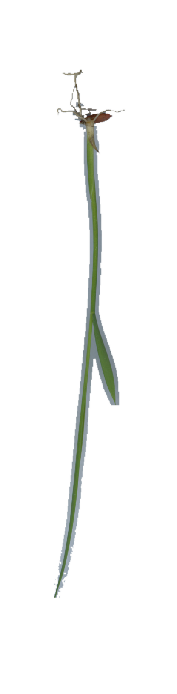
用于判断算法曲线是否确实覆盖真实苗体；点击图片可查看原尺寸。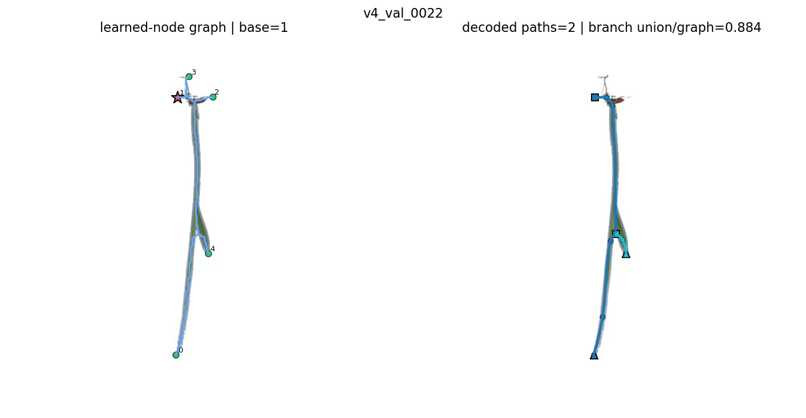
结果图左半为学习点结构图，右半为解码路径；点击图片可查看原尺寸。v4_val_0034
points 6/7 | paths 2 | coverage 0.955 | base distance 0.014
先看左侧无标注原图确认真实苗体，再检查中间的学习点结构和右侧的最终路径是否贴合真实茎叶。
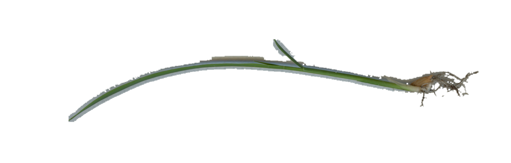
用于判断算法曲线是否确实覆盖真实苗体；点击图片可查看原尺寸。v4_val_0018
points 9/10 | paths 3 | coverage 0.955 | base distance 0.000
先看左侧无标注原图确认真实苗体，再检查中间的学习点结构和右侧的最终路径是否贴合真实茎叶。
v4_val_0037
points 5/5 | paths 1 | coverage 0.956 | base distance 0.014
先看左侧无标注原图确认真实苗体，再检查中间的学习点结构和右侧的最终路径是否贴合真实茎叶。
v4_val_0023
points 5/6 | paths 1 | coverage 0.956 | base distance 0.016
先看左侧无标注原图确认真实苗体，再检查中间的学习点结构和右侧的最终路径是否贴合真实茎叶。
v4_val_0017
points 6/7 | paths 1 | coverage 0.959 | base distance 0.000
先看左侧无标注原图确认真实苗体，再检查中间的学习点结构和右侧的最终路径是否贴合真实茎叶。
v4_val_0001
points 6/7 | paths 2 | coverage 0.960 | base distance 0.000
先看左侧无标注原图确认真实苗体，再检查中间的学习点结构和右侧的最终路径是否贴合真实茎叶。
v4_val_0003
points 6/7 | paths 2 | coverage 0.961 | base distance 0.000
先看左侧无标注原图确认真实苗体，再检查中间的学习点结构和右侧的最终路径是否贴合真实茎叶。
v4_val_0027
points 7/7 | paths 2 | coverage 0.961 | base distance 0.000
先看左侧无标注原图确认真实苗体，再检查中间的学习点结构和右侧的最终路径是否贴合真实茎叶。
v4_val_0024
points 4/4 | paths 2 | coverage 0.965 | base distance 0.022
先看左侧无标注原图确认真实苗体，再检查中间的学习点结构和右侧的最终路径是否贴合真实茎叶。
v4_val_0028
points 5/6 | paths 2 | coverage 0.981 | base distance 0.000
先看左侧无标注原图确认真实苗体，再检查中间的学习点结构和右侧的最终路径是否贴合真实茎叶。
v4_val_0007
points 5/6 | paths 1 | coverage 0.982 | base distance 0.021
先看左侧无标注原图确认真实苗体，再检查中间的学习点结构和右侧的最终路径是否贴合真实茎叶。
v4_val_0035
points 8/10 | paths 3 | coverage 0.985 | base distance 0.000
先看左侧无标注原图确认真实苗体，再检查中间的学习点结构和右侧的最终路径是否贴合真实茎叶。
v4_val_0002
points 6/6 | paths 1 | coverage 0.985 | base distance 0.000
先看左侧无标注原图确认真实苗体，再检查中间的学习点结构和右侧的最终路径是否贴合真实茎叶。
v4_val_0005
points 6/7 | paths 1 | coverage 0.992 | base distance 0.007
先看左侧无标注原图确认真实苗体，再检查中间的学习点结构和右侧的最终路径是否贴合真实茎叶。